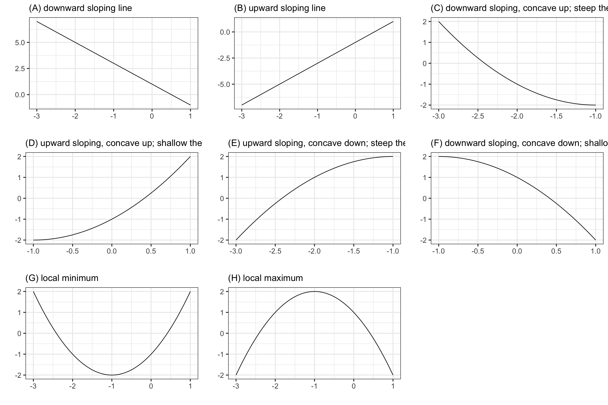
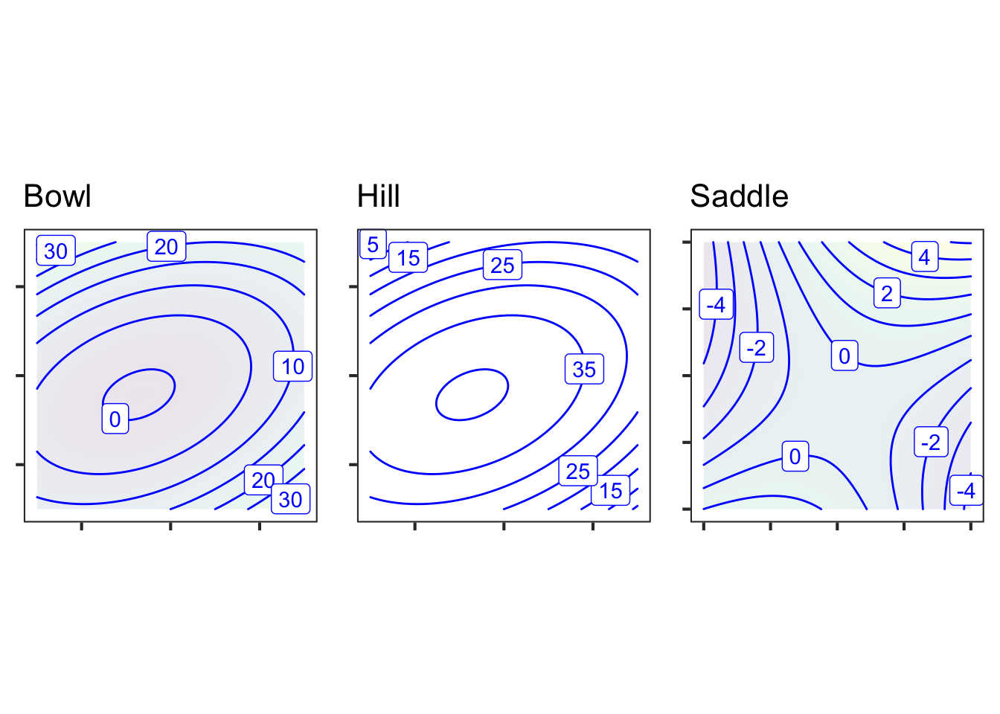

12 Low-order polynomials
Chapter Chapter 11 looked at the task of modifying a pattern-book function to display a desired pattern, focusing on patterns originating in graphs of data. The procedure involved identifying an appropriate pattern-book function, then using input and output scaling to stretch, flip, and lift that function so that it overlays, as much as possible, the desired pattern.
In this chapter, we will take on a different strategy for constructing appropriately shaped functions using linear combinations of a handful of simple functions: the monomials.
12.1 Polynomials
Recall that the monomials are the power-law functions with non-negative, integer exponents: \(x^0\), \(x^1\), \(x^2\), \(x^3\), and so on. The “and so on” refers to even higher integer exponents such as \(x^4\) or \(x^{51}\) or \(x^{213}\), to name but a few. The more common name for a linear combination of monomials is polynomial.
The first two terms in the polynomial \(g(t)\) could be written using exponents, like this: \[ g(t) \equiv a_0 t^0 + a_1 t^1 + \cdots\] In practice, nobody writes out explicitly the \(t^0\) function. Instead, recognizing that \(t^0 = 1\), we write the first term simply as \(a_0\). Similarly, rather than writing \(t^1\) in the second term, we write \(a_1 t\), without the exponent. This practice makes the formulas for polynomials more concise but at the cost of failing to remind the reader that all the functions in the linear combination are monomials.
For instance, a fifth-order polynomial consists of a linear combination of monomials up to order 5. That is, up to \(x^5\). This will have six terms because we count the order of the monomials starting with 0. \[g(t) \equiv a_0 + a_1 t + a_2 t^2 + a_3 t^3 + a_4 t^4 + a_5 t^5\ .\]
The challenge in shaping a polynomial is to find the scalar multipliers—usually called coefficients when it comes to polynomials—that give us the shape we want. This might seem to be a daunting task, and it is for a human. But it can easily be handled using volumes of arithmetic, too much arithmetic for a human to take on but ideally suited for computing machines.
12.2 Low-order polynomial models
Polynomials in general can show a wide variety of snake-like patterns. A fifth-order polynomial can have up to four internal curves. A tenth-order polynomial can have 9 internal curves, and so. There is, however, rarely a need for generating functions with all those curves. Instead, a great deal of modeling work can be accomplished with just first-order polynomials (no internal curves) or second-order polynomials (one internal curve).
\[\begin{eqnarray} \textbf{First-order: }\ \ \ \ \ & f_1(t) \equiv b_0 + b_1 t\\ \textbf{Second-order: }\ \ \ \ \ & f_2(t) \equiv c_0 + c_1 t + c_2 t^2 \end{eqnarray}\]
Note that we are using different names for the coefficients in each of the polynomial examples. The only significance of this is a reminder that each of the coefficients can be any number at all and isn’t necessarily related to any of the other coefficients. In addition to the usual \(a\), \(b\), \(c\), we’ve used the Greek alpha, beta, and gamma, that is \(\alpha\), \(\beta\), and \(\gamma\). The subscript on the coefficient name indicates which term it belongs to. For instance, the coefficient on the \(y^2\) term of the \(h_c\) polynomial is named \(\gamma_{yy}\) while the coefficient on the \(x y\) term has the subscript \(_{xy}\). Always, the coefficients are constant quantities and not functions of \(x\) or any other input.
In high-school mathematics, polynomials are often written without subscript, for instance \(a x^2 + b x + c\). This can be fine when working with only one polynomial at a time, but in modeling we often need to compare multiple, related polynomials.
You may prefer to think about a first-order polynomial as a straight-line function. Similarly, a second-order polynomial is also known as a “quadratic” or even a “parabola.” Nonetheless, it is good to see them as polynomials distinguished by their order. This puts them into a general framework, all of which can be handled by the technology of linear combinations. And polynomials can also involve more than one input. For instance, here are three polynomial forms that involve inputs \(x\) and \(y\):
\[\begin{eqnarray} h_a(x, y) &\equiv & \alpha_0 + \alpha_x\, x + \alpha_y\, y\\ h_b(x, y) &\equiv & \beta_0 + \beta_x\, x + \beta_y\, y + \beta_{xy}\, x y\\ h_c(x, y) &\equiv & \gamma_0 + \gamma_x\, x + \gamma_y\, y + \gamma_{xy}\, x y + \gamma_{xx}\, x^2 + \gamma_{yy}\, y^2 \end{eqnarray}\]
The reason to work with first- and second-order polynomials is rooted in the experience of modelers. Second-order polynomials provide a useful amount of flexibility while remaining simple and avoiding pitfalls.
12.3 Eight simple shapes
An easy way to think about how to use low-order polynomials in modeling is to think about the shapes of their graphs. Figure 12.1 shows eight simple shapes for functions with a single input that occur often in modeling.

Recall that Chapter -Chapter 6 introduced terms such as concavity, monotonicity, and slope for describing functions. To choose among these shapes, consider your modeling context:
- is the relationship positive (slopes up) or negative (slopes down)?
- is the relationship monotonic or not?
- is the relationship concave up, concave down, or neither?
Each of the eight simple shapes corresponds to a particular set of answers to these equations. Consider these modeling contexts as examples:
How many minutes can you run as a function of speed? Concave down and downward sloping: Shape (F). In everyday terms, you wear out faster if you run at high speed.
How much fuel is consumed by an aircraft as a function of distance? For long flights, the function is concave up and positive sloping: Shape (D). In everyday terms: fuel use increases with distance, but the amount of fuel you have to carry also increases with distance. A heavy aircraft uses more fuel per mile.
How far can you walk as a function of time? Steep-then-shallow and concave down: Shape (E). Your pace slows as you get tired.
How does the stew taste as a function of saltiness? There is a local maximum: Shape (H). The taste improves as the amount of salt increases … up to a point. Too much salt and the stew is unpalatable.
The incidence of an out-of-control epidemic versus time is concave up, but shallow-then-steep. As the epidemic is brought under control, the decline is steep-then-shallow and concave up. Over the whole course of an epidemic, there is a maximum incidence. Experience shows that epidemics can have a phase where incidence reaches a local minimum: a decline as people practice social distancing followed by an increase as people become complacent.
In micro-economic theory there are production functions that describe how much of a good is produced at any given price, and demand functions that describe how much of the good will be purchased as a function of price. As a rule, production increases with price and demand decreases with price.
In the short term, production functions tend to be concave down, since it is hard to squeeze increased production out of existing facilities. Production functions are Shape (E).
- For demand in the short term, functions will be concave up when there is some group of consumers who have no other choice than to buy the product. Downward sloping and concave up: Shape (C). In the long term, consumption functions can be concave down as consumers find alternatives to the high-priced good. For example, high prices of gasoline may, in the long term, prompt a switch to more efficient cars, hybrids, or electric vehicles. This will push demand down steeply.
Remarkably, all the eight simple shapes can be generated by appropriate choices for the coefficients in a second-order polynomial: \(g(x) = a_0 + a_1 x + a_2 x^2\). So long as \(a_2 \neq 0\), the graph of the second-order polynomial will be a parabola.
- The parabola opens upward if \(0 < a_2\). That is the shape of a local minimum.
- The parabola opens downward if \(a_2 < 0\). That is the shape of a local maximum
Consider what happens if \(a_2 = 0\). The function becomes simply \(a_0 + a_1\, x\), the straight-line function.
- When \(0 < a_1\) the line slopes upward.
- When \(a_1 < 0\) the line slopes downward.
To produce the steep-then-shallow or shallow-then-steep shapes, you also need to restrict the function domain to be on one side or another of the turning point of the parabola as shown in Figure 26.3.
12.4 Polynomials with two inputs
For functions with two inputs, the low-order polynomial approximation looks like this:
\[g(x, y) \equiv a_0 + a_x x + a_y y + a_{xy} x y + a_{yy} y^2 + a_{xx} x^2\]
It helps to have different names for the various terms. It is not too bad to say something like, “the \(a_{xy}\) term.” (Pronunciation: “a sub x y” or “a x y”) But the proper names are: linear terms, quadratic terms, and interaction term. And a shout out to \(a_0\), the constant term.
\[g(x, y) \equiv a_0 + \underbrace{a_x x + a_y y}_\text{linear terms} \ \ \ + \underbrace{a_{xy} x y}_\text{interaction term} +\ \ \ \underbrace{a_{yy} y^2 + a_{xx} x^2}_\text{quadratic terms}\]
The interaction term arises in models of phenomena such as the spread of epidemics, the population dynamics of predator and prey animals, and the rates of chemical reactions. In each of these situations, one thing is interacting with another: a predator killing a prey animal, an infective individual meeting a person susceptible to the disease, one chemical compound reacting with another.
Under certain circumstances, modelers include one or both quadratic terms, as in \[h_3(x, y) \equiv c_0 + c_x\, x + c_y\, y + c_{xy}\,x\, y + \underbrace{c_{yy}\, y^2}_\text{quadratic in y}\] The skilled modeler can often deduce which terms to include from basic facts about the system being modeled. We will need some additional calculus concepts before we can explain this straightforwardly.
## Loading required namespace: plotlyA second-order polynomial with two inputs can take on any one of three shapes: a bowl, a hilltop, or a saddle.

Other shapes for modeling can be extracted from these three basic shapes. For example, the lower-right quadrant of the Saddle has the shape of seats in an amphitheater.
12.5 Theory out of a hat
The start of Chapter Chapter 11 introduced a little mystery. Newton introduced his Law of Cooling in the 17th century: The rate at which an object cools depends on the difference in temperature between the object and its ambient environment. But in the 17th century, there was no precise way to measure a rate of temperature change. So how did Newton do it?
Even with primitive thermometers, one can confirm that a mug of hot water will cool and a glass of cold water will warm to room temperature and stay there. So Newton could deduce that the rate of temperature change is zero when the object’s temperature is the same as the environment. Similarly, it is easy to observe with a primitive thermometer that a big difference in temperature between an object and its environment produces a rapid change in temperature, even if you cannot measure the rate precisely. So the rate of cooling is a function of the temperature difference \(\Delta T\) between object and environment.
What kind of function?
Low-order polynomials to the rescue! The simplest model is that the rate of cooling will be \(a_0 + a_1 \Delta T\), a first-order polynomial. But we know that the rate of cooling is zero when \(\Delta T = 0\), implying that \(a_0=0\). All that is left is the first-order term \(\Delta T\), which you can recognize as the proportional() function.
12.6 Drill
**Part 1** In the polynomial $a_0 + a_x x + a_y y + a_{xy} xy$, what is the term $a_{xy}xy$ called? Constant term Quadratic term Interaction term Linear term
**Part 2** In the polynomial $a_0 + a_x x + a_y y + a_{xx} xx$, what is the coefficient on the interaction term? \(a_0\) \(a_{xy}\) 0 \(a_{xx}\)
**Part 3** Imagine a second-order polynomial in three inputs: $x$, $y$, and $z$, like this: $$b_0 + b_x x + b_y y + b_z z + b_{xy} xy + b_{xz} xz + b_{xx} x^2 + b_{yy} y^2 + b_zz z^2\ .$$ All of the possible second-order (or less) terms are shown, except for one. Which term is missing? - the constant term
- the quadratic term in \(z\)
- the interaction between \(y\) and \(z\)
- the linear term in \(y\)
12.7 Exercises
Problem with NA NA